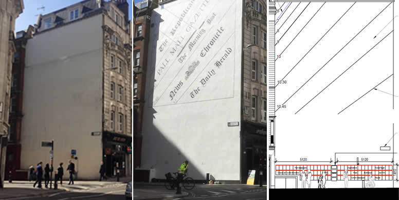
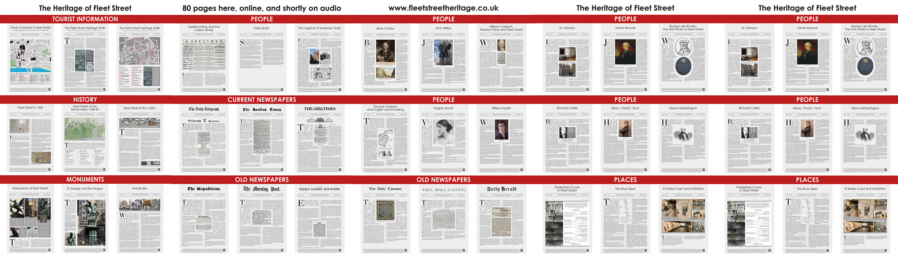

The Proposed Fleet Street Heritage Wall
at the corner of Bouverie Street and Fleet
Street, London, EC4Y 1JU
WE HAVE A VISION .....but we need your
support to make it happen
1950 -2020........................................2021......................................2025

|
This is a stunning site (a plain
wall 17 metres high with no windows). Piers Nicholson did the
initial design in 2007, but it took many years to get the idea
accepted, then get planning permission, and then find £20,000
to build it.
|
We created the Heritage
Sundia in 20021. At 10 m. wide, it's the largest vertical sundial
in Europe! In the next two years,as part of the City of London
funding, we made 70
information panels about the
Heritage of Fleet Street;
|
Our new vision
is to create A Heritage Wall of ceramic tiles so that most of the
panels could be displayed in Fleet Street, all day and every day
of the year We have created a facsimile wall of paper panels nearby
|
We have a great story to tell,
and this is the way to tell it
Here is how the right hand side of the Heritage Wall would looc
(click image to enlarge)
(To read the content of
an individual page, please go to the
main website
A QR code on each panel links to the webpage,so that people
can read it later if they wish.
Each web pages will have an audio linkto give a choice between
reading and hearing

How you can help
by posting a comment on the City
of London website
(or reach it by putting "City of London planning
comments" into the search bar, click on "View or comment....",
scrolll down to
application number, and enter keyword application number 24/03125
You will be asked to fill out a form with your name address
and other details
and you then have 2000 characters for your
comment. You can download the applicatin from the City website,
or you can view them here
Alternatively, you can email your comments quoting 24/03125
to PLNcomments@cityoflondon.gov.uk
You must put the application number 24/03125 at the top,
say that you support the apllication,
and give your name address and postcode.
if you have supplied this information correctly, you will receive an acknowlegement,
and your comments will be added to the list.
It would be helpful if you could start by amplifying your interest,
for example f
- I am a neighbour who has lived
here for 15 years
- I work here and walk in Fleet
Street most days
- I am a tourist from ...........visiting
London for ... days
- I am very interested in history and come to London several times ayear
If you would like to read some of
the comments made so far about this project3, please click here
It would be helpful if you could start by amplifying your interest,
for example f
- I am a neighbour who has lived
here for 15 years
- I work here and walk in Fleet
Street most days
- I am a tourist from ...........visiting
London for ... days
- I am very interested in history and come to London several times ayear
If you would like to read some of
the comments made so far about this project3, please click here
It would be helpful if you could start by amplifying your interest,
for example f
- I am a neighbour who has lived
here for 15 years
- I work here and walk in Fleet
Street most days
- I am a tourist from ...........visiting
London for ... days
- I am very interested in history and come to London several times ayear
If you would like to read some of
the comments made so far about this project3, please click here
|
|
|
{kind=link}